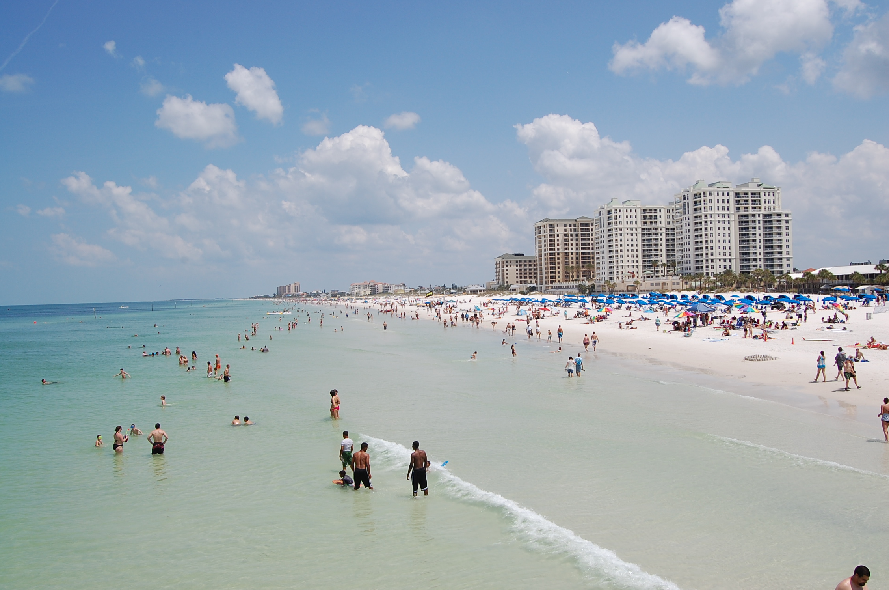

10 days
starting at
$2,000
per person
Tampa
Things to do
- Explore Busch Gardens: Experience thrilling rides, live shows, and encounters with exotic animals in this renowned theme park.
- Davis Islands: Relax in this waterfront neighborhood with parks, marinas, and charming architecture.
- Lowry Park Zoo: Encounter a variety of animals in this family-friendly zoo with interactive exhibits.
- Tampa Bay History Center: Learn about the region's rich history through exhibits, artifacts, and interactive displays.
- Stroll Along Tampa Riverwalk: Enjoy scenic views, parks, and cultural landmarks along the Hillsborough River.
Crafted by seasoned experts, this itinerary is designed to spark ideas for your upcoming journey. Tailor it to align with your interests, preferences, and budget, enabling you to engage with local cultures and embrace authentic travel at your own pace, departing whenever it suits you.
Vacation Highlights
- All inclusive
- Pristine beaches
- Hotel transportation
- Lively nightlife

10-Day Tampa Bay Itinerary
Day 1
- Morning: Arrive in Tampa, check-in at a downtown hotel.
- Afternoon: Stroll along the Tampa Riverwalk, explore Curtis Hixon Waterfront Park.
- Evening: Dinner in Channelside or Ybor City.
Day 2
- Morning: Visit Lowry Park Zoo for a family-friendly adventure.
- Afternoon: Lunch in Seminole Heights, followed by the Tampa Museum of Art.
- Evening: Relax at a local brewery or enjoy dinner in Hyde Park Village.
Day 3
- Morning: Head to Busch Gardens for a day of theme park excitement.
- Afternoon: Enjoy shows, roller coasters, and animal encounters.
- Evening: Dinner at a themed restaurant within the park.
Day 4
- Morning: Explore Davis Islands and Peter O. Knight Airport.
- Afternoon: Lunch at a waterside café, followed by an afternoon cruise on Tampa Bay.
- Evening: Dinner at the marina.
Day 5
- Morning: Visit the Tampa Bay History Center.
- Afternoon: Lunch in historic Ybor City and explore its unique shops.
- Evening: Dinner at the Columbia Restaurant, a historic gem.
Day 6
- Morning: Explore the Straz Center for the Performing Arts.
- Afternoon: Lunch in downtown Tampa, followed by a visit to the Henry B. Plant Museum.
- Evening: Attend a live performance at the Straz Center.
Day 7
- Morning: Venture to Lettuce Lake Park for nature trails and wildlife.
- Afternoon: Lunch in New Tampa, followed by relaxation at a spa.
- Evening: Dinner in the scenic Hyde Park area.
Day 8
- Full Day: Enjoy a day trip to Clearwater Beach for sun, sand, and ocean activities.
- Evening: Return to Tampa for dinner at a beach-themed restaurant.
Day 9
- Morning: Tour Raymond James Stadium.
- Afternoon: Lunch in Westshore, followed by gaming at Tampa Bay Downs.
- Evening: Dinner at a sports-themed restaurant.
Day 10
- Morning: Morning shopping in International Plaza.
- Afternoon: Final lunch in Tampa.
- Evening: Departure.
- Ocean views
- Free wifi
- Catering options
- Outdoor event venues
- In-room safe
- Poolside food and drink service
- Room service
- 24/7 restaurant options
- local restaurants and bars in walking distance
- Spa
- Fitness center
- Multiple pools and waterparks
- beachfront seating